Chapter 6 · Part 1 — C-R-A-C-K
The hugged the . Each of its eight arms had two rows of . The stuck to the window.
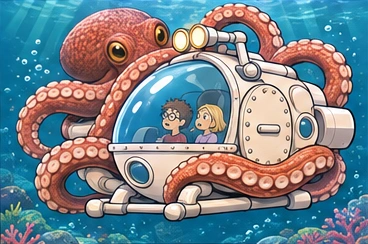
The stopped.
The at Jack and Annie with huge, human-like eyes.
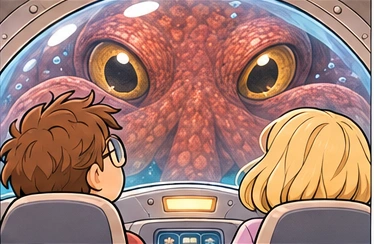
“I don’t think it wants to hurt us,” Annie. “It’s just curious.”
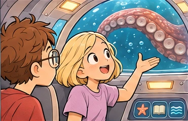
“I—I’m going to it,” said Jack.
His hands shook as he flipped through the pages of the book.
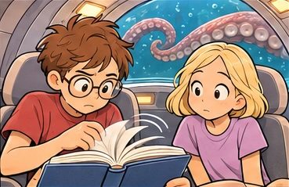
He found a picture of an and read aloud:
The octopus tends to be a gentle, shy . Sometimes, though, curiosity gets the best of it and it comes out of hiding.
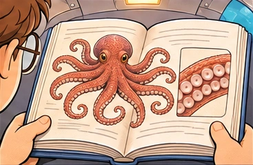
“Aw. See, I told you, he’s shy,” said Annie. She yelled to the , “Hi! I’m Annie! He’s Jack!”
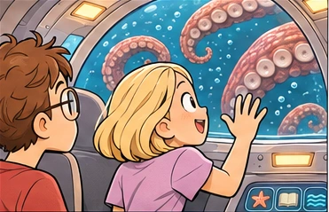
“, brother,” moaned Jack. He read further:
But the has huge strength. Each of its arms, or , has many , which act like rubber suction cups. It is nearly impossible to free an object from their grasp.
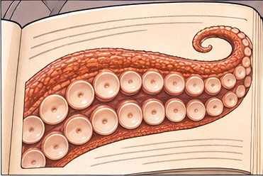
“, great,” said Jack. “We’ll never get rid of this thing.”
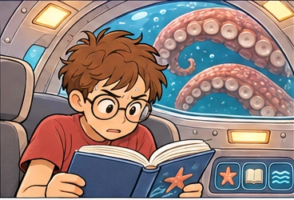
Just then, felt a drop hit his arm. Water. He looked up at the ceiling.
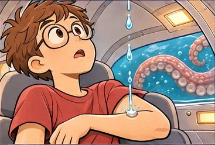
“Uh-oh,” said .
A thin ran along the ceiling. Smaller cracks branched out from it.
Water from the cracks.
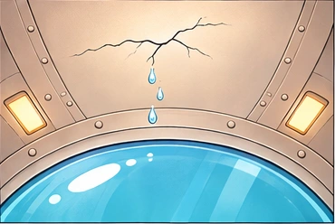
“We found the ,” said Annie.
“The better let go! Before the whole ceiling breaks!” said Jack.
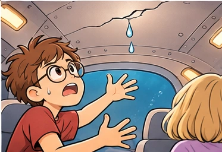
“Let go, please. Please!” Annie shouted at the .
The blinked, as if trying to understand her.
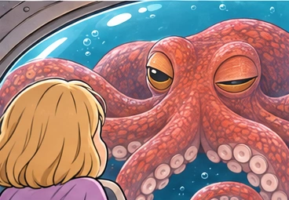
“! Please! Please!” she shouted.
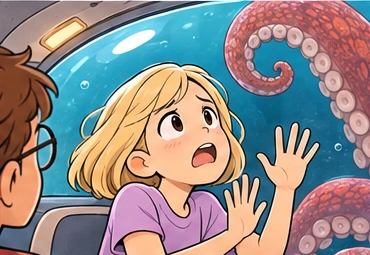
“ on, Annie,” said Jack. “It doesn’t care if you’re polite.”
The blinked at Jack.
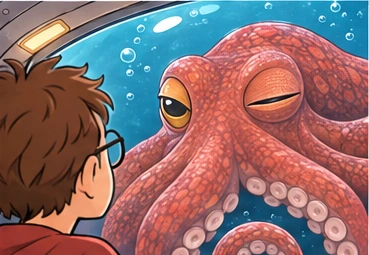
“Get out of here!” yelled at it. “Now! Beat it! Scram! Go!”
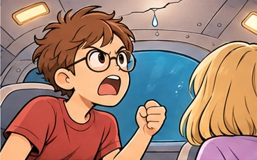
The shot a cloud of black liquid into the water and disappeared into the dark cloud. Its long trailed through the water.
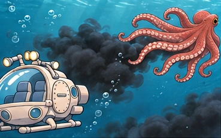
The started to rise slowly again.
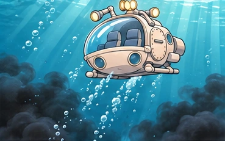
“You hurt his feelings,” said.
“I don’t think so … ” Something bothered .
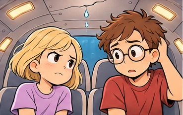
He looked back at the book. He read to himself:
The squirts black ink to escape its enemies. One of its main enemies is the shark.
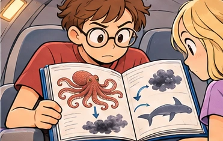
“, no,” said Jack.
“What’s wrong?” Annie.
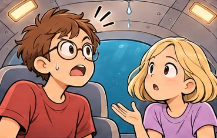
looked out the window. The water was growing clear again.
A shadowy figure moved toward the .
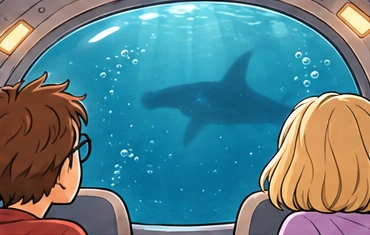
“What is that?” Annie.
The fish was way bigger than the . And it had a very weird head.
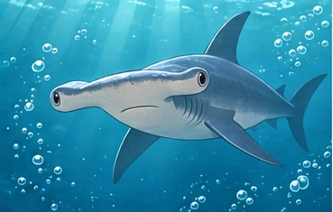
could feel his heart nearly stop.
“A shark,” he breathed. “We’re really in trouble now.”
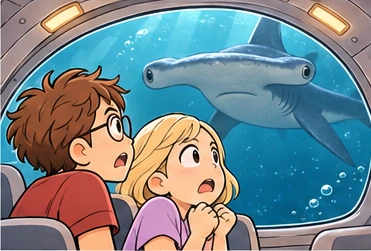